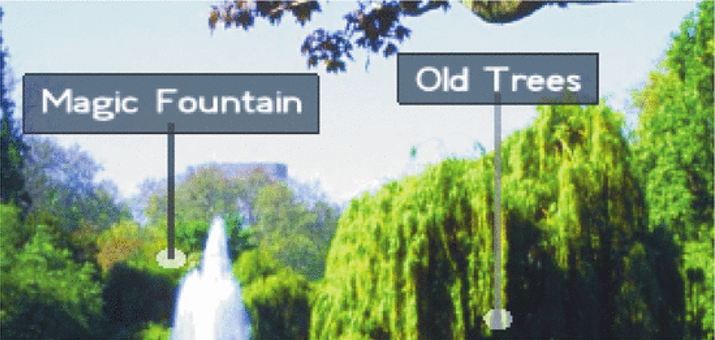

Introduction
Introduction
of Image-Driven Management.
Augmented Reality (AR) ได้นำเสนอข้อมูลดิจิตอลที่เชื่อต่อกับโลกแห่งความเป็นจริง เข้ากับโลกเสมือน สิ่งนี้จะช่วยในการค้นหาอาคารและสถานที่ที่มีอยู่ฐานข้อมูล ARBs เป็นโปรแกรมที่ใช้นอกบ้าน (out-door) แบบใหม่ ซึ่งสามารถทำให้ผู้ใช้ได้เห็นป้ายเพื่อที่จะค้นหาสถานที่นั้นๆ ผ่านโปรแกรมตามสภาพแวดล้อมของจริง โปรแกรมดังกล่าวจะให้ข้อมูลดิจิตอล เช่น สถานบันเทิง หรือ อนุสาวรีย์ ที่ปรากฏอยู่บนสมาร์ทโฟนของผู้ใช้
ใน ARBs จะใช้ข้อมูลที่ถูกเชื่อต่อกับฐานข้อมูลตามพื้นที่นั้นๆ โดยทั่วไปจะใช้ POI กับ GPS ในการระบุตำแหน่ง ซึ่งเป็นการทำ ARBs แบบเก่าที่ขาดความรู้ในด้านสภาพแวดล้อมที่ได้กล่าวไปข้างต้น ดังนั้นจึงมีการจำลองสภาพแวดล้อมแบบ 3 มิติที่สามารถใช้กับระบบได้เพื่อทำให้ระบบสามารถระบุตำแหน่งได้อย่างชัดเจน แต่ถ้าแบบจำลองนั้นมีข้อมีผิดพลาดก็จะทำให้การระบุตำแหน่งนั้นผิดไปตามกันด้วย

รูปที่1:รูปด้านซ้ายเป็นการทำ ARBs แบบธรรมดาทั่วไป รูปด้านขวามีการใช้เส้นนำทาง (leader line) ในการชี้ตำแหน่งเพื่อติดป้ายแบบอัตโนมัติอย่างเหมาะสมและสมบูรณ์กว่า ซึ่งการใช้เทคนิคแบบรูปด้านขวาจะไม่ทำให้ป้ายเกิดการซ้อนทับกัน และจะทำให้เห็นตำแหน่งของสถานที่ได้อย่างชัดเจนกว่ารูปด้านซ้าย
ARBs ในจะใช้ป้ายสัญลักษณ์หรือข้อความเพื่ออธิบายในการนำทาง เนื่องจาก POI ไม่มีข้อมูลอื่นๆที่สามารถใช้ในการบอกตำแหน่ง ซึ่งถูกกำหนดโดย POI และ GPS ตามข้อมูลปัจจุบัน สิ่งเหล่านี้มักจะทำให้เกิดการซ้อนทับกันของป้าย เพราะว่าขาดการจัดวางป้ายที่มีประสิทธิภาพ (ดูรูปที่ 1 ด้านซ้าย)
ในงานนี้ผู้วิจัยได้เสนอการจัดการมุมมองการเคลื่อนที่ของภาพเพื่อปรับปรุงการแสดงผลของ ARBs (รูปที่ 1 ด้านขวา) ผู้วิจัยหวังว่าวิธีการของพวกผู้วิจัยสามารถที่จะแก้ไขปัญหาที่นักพัฒนา ARBs แบบรุ่นเดิมๆที่ไม่มีข้อมูลด้านสภาพแวดล้อมในการติดป้ายโดยการวิเคราะห์จากภาพวีดีโอเพื่อตรวจสอบตำแหน่งของป้ายชื่อโดยใช้เทคนิคต่างๆข้างต้นซึ่งจะมีคำอธิบายแนวทางทั่วๆไปในการจัดการมุมมองใน ARBs
Related Work
Related work
in Image-Driven Management.
การจัดวางป้ายเป็นปัญหาที่ถูกศึกษามาอย่างดี และมีเทคนิคจำนวนมากที่ได้รับการเสนอสำหรับโปรแกรมคอมพิวเตอร์กราฟิกในแบบ 2D และ 3D เทคนิคเหล่านี้ยังเกี่ยวข้องกับ AR และยังครอบคลุมเนื้อหาในเปเปอร์ชิ้นนี้ซึ่งถูกแบ่งออกเป็นดังต่อไปนี้ คือ ผู้วิจัยได้กล่าวถึงมุมมองเทคนิคการจัดการที่ต้องใช้เทคนิค Geometry-based layout และผู้วิจัยเสนอมุมมองเป้าหมายในการสร้างโดยใช้เทคนิค Image-based layout สุดท้ายคือการหารือเกี่ยวกับเทคนิค Adaptive representation ของป้ายชื่อ
Geometric-based layout
เทคนิคต่างๆได้ถูกเสนอเพื่อการหาจุดที่สำคัญสำหรับการติดป้ายในระบบสารสนเทศทางภูมิศาสตร์และแผนที่. คริสและคณะ [4] ได้อธิบายว่าปัญหาหลักของการวางป้ายเป็นแบบ NP-hard (จริงหรือเท็จ ใช่หรือไม่ใช่) และเสนอ simulated annealing และ gradient descent เป็นหนทางในการแก้ไขปัญหา. Mote และคณะ [26] แนะนำวิธีแบบ real-time ที่ขึ้นอยู่กับ geometric considerations. Wu และคณะ [40] เสนอเทคนิคทางพันธุกรรมร่วมกับการวิเคราะห์ภาพการแทนที่(ติดป้าย)ในแผนที่. Ebner และคณะ [7] ใช้วิธีการ force-based ในการทำคำอธิบายประกอบของภาพ. Luan และคณะ [20] นำเสนอวิธีการใส่คำอธิบายประกอบภาพที่มีขนาดความชัดเยอะๆ (gigapixel image)
ยังมีวิธีการที่คล้ายกันซึ่งมีการเสนอสำหรับฉาก 3D ตัวอย่างเช่น Hartmann และคณะ [13] แสดงให้เห็นวิธีการป้ายบังคับใช้สำหรับการ annotating โมเดล 3 มิติ. Vollick และคณะ [37] เสนอวิธีการเรียนรู้ขั้นพื้นฐานที่ต้องใช้ขั้นตอนให้น้อยที่สุดใช้ร่วมกับการคำนวณ. Stein และ Decoret [31] ได้ปรับปรุงมาตรฐานเทคนิค greedy algorithm โดยการจำแนกฉาก 2D กับ Voronoi diagram และให้ดำเนินการบน GPU. Molik และ คณะ [5] ยังใช้ greedy algorithm กับตรรกศาสตร์ และรวมถึง fuzzy logic (ใช้ความรู้สึกในการตัดสินใจ) อีกด้วย
Maass และ Dollner ได้เสนอการแก้ปัญหาที่แตกต่างกันสำหรับคำอธิบายประกอบของสภาพแวดล้อมจริงและฉาก 3Dเชิงพื้นที่ [22]. พวกเขาอธิบายวิธีพิจารณาความลึกของป้ายและพื้นที่บนหน้าจอที่สามรถใช้ได้ [23]. พวกเขาคาดว่ารูปทรงเรขาคณิตของวัตถุและการปรับตัวโดยอัตโนมัติของการวางตำแหน่งและขึ้นอยู่กับมุมมองของกล้องในปัจจุบัน [21]. พวกเขากล่าวถึงความแตกต่างระหว่างการติดฉลากระหว่าง 2D และ3D และความสำคัญของการพัฒนาในการตัดสินใจภายหลัง
การติดฉลากและการจัดวางป้ายต้องตรวจสอบใน AR เพราะพวกเขาเป็นบุคคลที่เกี่ยวข้อง มากที่สุดสำหรับโปรแกรม AR [39]. เบลล์และคณะ [3] นำเสนอหนึ่งในผลงานที่เก่าแก่ที่สุดใน AR และแนะนำเทคนิคเรขาคณิตที่ใช้พิจารณาการวัตถุแบบ static และ dynamic. เป็นครั้งแรกของพวก เขาที่จะเน้นความสำคัญในมุมมองของการจัดการใน AR ซึ่งเป็นแรงจูงใจของการวิจัยนี้. ซูมาและ คณะ [2] การประเมินขั้นตอนวิธีการที่แตกต่างกันสำหรับการจัดวางป้ายใน AR ที่พูดถึงผลของการ ดำเนินงานทางด้านเทคนิคและการอ่านของวิธีการที่แตกต่างกัน พวกเขาชี้ให้เห็นปัจจัยที่มีอิทธิพล ต่อการเลือกใช้อัลกอริทึมเช่นโปรแกรมหรือเงื่อนไขที่เฉพาะเจาะจงของงาน
ความพยายามอื่น ๆ ได้รับการทำสำหรับการปรับปรุงการจัดวางป้ายใน AR. ชิบาตะและคณะ [30] เสนอกรอบการทำงานสำหรับรูปแบบตามกฎขณะที่. Tenmoku และคณะ [34] แนะนำสองวิธีการแก้ปัญหาที่แก้ยากในการแยกแยะ (การเน้นจุดสำคัญและจุดที่ไม่สำคัญ). Zhang และคณะ [41] การตรวจสอบวิดีโอที่เติมและแสดงภาพของอาคารแบบ 3 มิติเพื่อเลือกพื้นที่การจัดวางที่ดีที่สุดในภาพ. ปีเตอร์สันและคณะ [28], [27] การศึกษาวิธีการทางเลือกตามการใช้งานของมิติเพื่อปรับปรุงการอ่านของป้ายและไม่ทำให้เกะกะไปจากของเทคนิคมาตรฐาน ในการศึกษาเปรียบเทียบพวกเขาแสดงให้เห็นว่าวิธีการของพวกเขาพิสูจน์ให้เห็นว่ามีประสิทธิภาพ หรือขั้นตอนวิธีการที่มีมาตรฐานกว่า. Makita และคณะ [25] การสำรวจการเพิ่มขึ้นของสิ่งที่เคลื่อนที่ได้ (เช่นคน) และอธิบาย greedy algorithm ในการระบุตำแหน่งที่ดีที่สุดของป้ายชื่อ
ข้อจำกัด ของเทคนิคเหล่านี้ทั้งหมดคือการขาดการพิจารณาในมุมมองของโลกแห่งความ จริงซึ่งเป็นที่สันนิษฐานว่าจะมีพื้นหลังชุด วิธีการส่วนใหญ่พึ่งพาความพร้อมของแบบจำลองทาง เรขาคณิต (2D หรือ 3D) ของเนื้อหาในขณะที่เรามีสมาธิอยู่กับเทคนิคที่ทำงานโดยไม่มีข้อมูลเหล่านี้
Image-based layout
มีเพียงไม่กี่งานที่มีการสำรวจรูปแบบการสร้างภาพที่ใช้สำหรับ AR. Leykin และ Tuceryan [18] อธิบายวิธีการเรียนรู้ที่ใช้ในการประเมินพื้นที่ที่ดีในการวางป้ายใน AR แต่ไม่ได้อธิบายขั้นตอนวิธีการเลือกตำแหน่งที่เหมาะของป้าย
Rosten และคณะ [29] การดำเนินการจัดวางป้ายแบบเรียลไทม์สำหรับอุปกรณ์มือถือโดยใช้แผนที่ที่สร้างขึ้นจากความสำคัญตามคุณสมบัติอย่างรวดเร็วของภาพวิดีโอ เทคนิคของพวกเขายังสามารถเพิ่มข้อจำกัดในการป้ายตำแหน่งในภูมิภาคที่เฉพาะเจาะจงและที่อยู่ตำแหน่งของป้ายภายใต้เงื่อนไขแบบไดนามิก อย่างไรก็ตามเทคนิคก็แสดงให้เห็นเพียงไม่กี่ป้ายเพียงสำหรับฉากในร่มและไม่ได้พิจารณาลักษณะที่ปรากฏของป้าย
ทานากะและคณะ [33] พิจารณาภาพวิดีโอเมื่อมีการวางคำอธิบายประกอบและนำเสนอค่าเฉลี่ยของความอิ่มตัวของสี RGB และความสว่างของภูมิภาคในภาพวิดีโอ ค่าสัมประสิทธิ์สำหรับ การแก้ไขปัญหาของพวกเขาจะถูกกำหนดผ่านการเรียนรู้ ในการเปรียบเทียบเทคนิคของผู้วิจัยจะใช้หน่วย pixel-based มากกว่า region-based และยังพิจารณาการเชื่อมโยงกันชั่วขณะสำหรับการวางคำอธิบายประกอบ
Adaptive representation
การนำเสนอเนื้อหาเสมือนใน AR เป็นปัญหาที่ซับซ้อนเพราะข้อมูลเสมือนจริงจะต้องถูกรวมในวิดีโอ. Julier และคณะ [16] จุดประสงค์กรากรองข้อมูลเพื่อที่จะทำให้ข้อมูลที่มีอยู่มากลดลงและลดความยุ่งเหยิงของภาพที่ปรากฏ. ลิฟวิงสตันและคณะ [19] เปรียบเทียบรูปแบบการวาดภาพที่แตกต่างกันเพื่อแก้ไขความหมายเชิงลึกและปัญหาการการซ้อนทับระหว่างเนื้อหาจริงและเสมือน
Uratani และคณะ [36] การตรวจสอบการแสดงป้ายใน AR. พวกเขาระบุว่าตัวแปรสามารถที่จะปรับปรุงในการอ่านของพวกเขาได้ เช่นขนาดป้าย สีหรือความโปร่งใส แม้ว่าเทคนิคของพวกไม่สามารถที่จะพิจารณาพื้นหลังที่สำคัญตามธรรมชาติได้. คิมและคณะ [17] กล่าวถึงการปรับของป้ายและการศึกษาการนำร่องบางอย่างในการติดป้าย คล้ายกับ Urani และคณะ [36] ที่ได้บอกว่าข้อมูลนี้ไม่ได้ใช้ในระบบอัตโนมัติ
Jankowski และคณะ [15] เสนอให้ศึกษาคำประกอบเปรียบเทียบ มากกว่าการสังเคราะห์ภาพหรือวิดีโอได้ (ไม่มีการติดตามหรือไม่มีป้ายแบบไดนามิก) ผลการวิจัยของพวกเขาทำให้เห็นว่าการใช้ป้ายกับพื้นหลังสี่เหลี่ยมเป็นการปรับปรุงการอ่านให้ง่ายขึ้นและยังเป็นที่ต้องการของผู้ใช้
Gabbard และคณะ [9], [8], [10] เสนอแนวคิดของอินเตอร์เฟซที่ใช้งานAR. ซึ่งเป็นแรงบันดาลใจในจุดประสงค์ของงานนี้. พวกเขาได้เสนอการศึกษาที่แตกต่างกันเกี่ยวกับการแสดงของป้ายสำหรับ AR. ผู้พัฒนาได้มุ่งเน้นไปที่การแทนของป้าย (กรอบ) และเสนอความแตกต่างของการศึกษาในเรื่องการอ่านที่ง่ายของป้ายโดยใช้ความหลากหลายของสถานการณ์เช่นเดียวกับรูปแบบการวาดภาพหลายคน (ไม่มีพื้นหลัง ป้ายเงาหรือโครงร่าง) พวกเขายังมีอยู่สองวิธีที่ใช้งานเพื่อแสดงป้าย หนึ่งคือใช้ส่วนประกอบ HSV (Hue Saturation Value) สูงสุด และสองใช้ความคมชัดของแสงสว่างสูงสุด. นอกจากนี้ผู้วิจัยยังมองไปที่เทคนิคการที่ใช้งาน การพิจารณาการปรับพื้นหลัง และนำเสนอวิธีการทางเลือกที่ผู้วิจัยจะอธิบายในส่วนที่ 5.2
แตกต่างจากการทำงานก่อนหน้านี้วิธีการที่นำเสนอในบทความนี้เน้นทั้งรูปแบบและการแทนที่ของป้ายในทางเดียว นอกจากนี้งานของผู้วิจัยยังแตกต่างจากวิธีการเดิมโดยพิจารณาด้วยวิธี pixel-based ที่ใช้สำหรับการจัดวางป้ายชื่อ (เมื่อเทียบกับตารางวัตถุหรือวิธี region-based) และแนะนำกรอบการออกแบบที่จะพิจารณาลักษณะของการติดป้ายโดยขึ้นอยู่กับเนื้อหาของวิดีโอภาพ
Terminology
Terminology
in Image-Driven Management.
 เราจะอธิบายศัพท์ที่ใช้ใน Paper นี้อย่างสั้นๆ เราจะใช้ POI (geographical) เป็นฟีเจอร์หลัก ซึ่งเกี่ยวข้องกับป้ายที่เป็นรูปภาพหรือข้อความที่แทนข้อมูลทางภูมิศาสตร์ที่เฉพาะเจาะจง โดยปกติการใช้ POIs ในสถานที่ใดที่หนึ่งสามารถมีจุด POIs อยู่รวมกันหลายๆจุด แต่ในทางตรงกันข้าม Paper ชิ้นนี้เราได้อธิบายว่าเราไม่สามารถแยกแยะกลุ่มของจุดต่างๆที่มีการติดป้ายและใช้คำอธิบายสั้นๆของ POIs ที่ซ้อนทับกันได้ โดยหากมองการทำงานของ POIs แบบรวมๆจะมีอยู่ 2 ข้อหลักๆ คือ การออกแบบหรือการติดป้าย (point-based placement or labeling) และการแทนที่หรือเรียกง่ายว่าการมาร์คจุด (visual style) ซึ่งแน่นอนว่าเราได้กล่าวมาแล้วใน Paper นี้ว่า เราไม่ควรที่จะออกแบบและติดป้ายให้มีการซ้อนทับกัน
เราจะอธิบายศัพท์ที่ใช้ใน Paper นี้อย่างสั้นๆ เราจะใช้ POI (geographical) เป็นฟีเจอร์หลัก ซึ่งเกี่ยวข้องกับป้ายที่เป็นรูปภาพหรือข้อความที่แทนข้อมูลทางภูมิศาสตร์ที่เฉพาะเจาะจง โดยปกติการใช้ POIs ในสถานที่ใดที่หนึ่งสามารถมีจุด POIs อยู่รวมกันหลายๆจุด แต่ในทางตรงกันข้าม Paper ชิ้นนี้เราได้อธิบายว่าเราไม่สามารถแยกแยะกลุ่มของจุดต่างๆที่มีการติดป้ายและใช้คำอธิบายสั้นๆของ POIs ที่ซ้อนทับกันได้ โดยหากมองการทำงานของ POIs แบบรวมๆจะมีอยู่ 2 ข้อหลักๆ คือ การออกแบบหรือการติดป้าย (point-based placement or labeling) และการแทนที่หรือเรียกง่ายว่าการมาร์คจุด (visual style) ซึ่งแน่นอนว่าเราได้กล่าวมาแล้วใน Paper นี้ว่า เราไม่ควรที่จะออกแบบและติดป้ายให้มีการซ้อนทับกัน
Design Consideration
Design Consideration
on Image-Driven Management.
ในหัวข้อนี้ ผู้วิจัยได้กำหนดความต้องการที่มีไว้สำหรับ AR แบบทั่วไป และ ARBs ในที่นี้ผู้วิจัยได้นำกฎของการออกแบบ AR บางส่วน และเทคนิคการออกแบบกราฟิกและดิจิตอลมีเดีย ตามหลักของ HCI ทั่วๆไป มาใช้ก่อนการทำงาน โดยทั่วไปแล้วผู้วิจัยเชื่อว่า อะไรที่อ่านง่าย ไม่สับสน สวยงาม และเชื่อมโยงกันได้ดี นั้นคือกฎของ AR ซึ่งกฎของการออกแบบที่เป็นที่รู้จักถูกแบ่งออกเป็น 4 ประเภทหลักๆ คือ
1. ข้อควรพิจารณาในการทำกราฟิกที่เป็นมาตรฐาน (Standard graphic considerations): ถูกนิยามไว้ว่า สิ่งนี้จะถูกใช้สำหรับการออกแบบป้ายแบบดั้งเดิม ความหมายอีกนัยหนึ่งก็คือการออกแบบกราฟิกที่ใช้ในการทำป้ายต้องเป็นแบบเดียวกัน (Standard)
2. ข้อควรพิจารณาในพื้นฐานของความเป็นจริง (Real world considerations): สิ่งนี้จะตอบสนองต่อกฎที่เกี่ยวข้องกับการติดป้ายที่อยู่บนพื้นฐานของความเป็นจริง
3. ข้อควรพิจารณาในส่วนของสภาพแวดล้อม (Context considerations): แนะนำประเภทของงานที่เกี่ยวข้องกับการใช้ข้อมูลสภาพแวดล้อมในการติดป้าย
4. ข้อควรพิจารณาในการสร้าง (Authoring considerations): สิ่งนี้จะกำหนดกฎเกณฑ์ที่ใช้ในการสร้าง ARBs ซึ่งจะเกี่ยวข้องกับการแบ่งการควบคุมของผู้ออกแบบในมุมมองของผู้จัดการ นอกเหนือจากกฎ 4 ข้อของ AR เราจะขยายคำอธิบายกฎ 4 ข้อของ AR ในเนื้อหาถัดไป
Considerations in VR (virtual reality)
ผู้วิจัยได้ทำการย่อกฎพื้นฐานจากหลายๆแห่งและเกณฑ์ที่กำหนดไว้ก่อนหน้านี้ในเปเปอร์ [5], [31], [37], [14] จากงานเหล่านี้ที่ถูกสังเคราะห์ออกมาทำให้เกิดคุณสมบัติที่ดีของการติดป้าย
•หลีกเลี่ยงการทับซ้อนของป้ายที่เป็นป้ายหลัก
•หลีกเลี่ยงการติดป้ายที่ทับซ้อนกัน
•หลีกเลี่ยงการทับกันของ Leader line
•จัดสรรพื้นที่มากพอสำหรับการติดป้าย Leader line เพื่อให้สามารถอ่านอ่านและดูได้ง่าย
•ทำให้ความยาวระหว่าง Leader line และ anchor สั้นที่สุด
•รักษาทิศทางของ Leader line ตามการออกแบบที่เลือกไว้
•พิจารณาระยะห่างระหว่างกล้องและป้ายชื่อ (เช่นขนาดของป้ายและการกำหนด Leader line) [22]
•หลีกเลี่ยงการกระโดดของป้ายในระหว่างการเคลื่อนไหวกล้อง
•หลีกเลี่ยงการกระโดดของป้ายในระหว่างการเคลื่อนไหวของวัตถุ
นอกจากนี้ ต้องพิจารณาเกี่ยวกับการติดป้ายแบบสามิติ (รูป3มิติ อธิบายได้หลายๆมุม) ทั้งนี้ในการติดป้ายควรจะจัดหาเส้นที่มันบ่งบอกแบบลึก (depth cues ) เพื่อง่ายในการเชื่อมโยงกับเนื้อหาหลัก
Considerations in AR (Augmented Reality)
ข้อควรพิจารณาที่อยู่ในโลกของความเป็นจริง การออกแบบสำหรับการหาตำแหน่งเพื่อติดป้ายและการแทนที่นั้นจะขึ้นอยู่กับข้อมูลที่ถูกขัดกรองมาจากวีดีโอภาพที่ใช้อยู่ ณ ตอนนั้น ซึ่งจะบอกรายละเอียดของงานตามที่ Rosten และคณะ [29], [39] และใช้วิธีคิดตามกฎของการติดป้ายดังต่อไปนี้ (ดูรูปภาพที่ 2)
รูปที่2: ภาพประกอบ3ภาพจากการพิจารณาจากโลกความเป็นจริง (จากบนลงล่าง) ไม่ดี (ซ้าย) และดี (ขวา) ตัวอย่างของ (a) หลีกเลี่ยงการทับซ้อนในพื้นที่สำคัญ (b) หลีกเลี่ยงการทับซ้อนบนขอบ (edge) (c) การปรับปรุงความคมชัดของป้ายชื่อ
• Sensors and tracking : การจัดวางป้ายและการแทนที่ควรที่จะปรับให้เข้ากับ sensor และลักษณะของการนำทางแบบต่างๆ (เช่นสิ่งประดิษฐ์ ข้อผิดพลาด [6])
•Video image / pictorial content: จัดหาการเชื่อมโยง (เครื่องมือ)กันระหว่างการแทนที่ของป้ายและลักษณะการจำลองของ Video image
• Video image / pictorial content: หลีกเลี่ยงการทับซ้อนในพื้นที่สำคัญของ Video image และจัดลำดับความสำคัญตามพื้นที่นั้นๆให้ดูดี (รูปที่ 2a)
• Video image / geometrical content: หลีกเลี่ยงการทับซ้อนกับโครงสร้างทางเรขาคณิต เช่นเส้นขอบ (รูปที่ 2b)
• Video image / pictorial content: การสนับสนุนการที่คนสามารถอ่านและมองได้ง่ายตามแบบ POIs ด้วยการปรับความเข้มอ่อนระหว่างป้ายและ Video image [15] (รูปที่ 2c)
• Video image / geometrical content: จัดโครงสร้างทางเรขาคณิตทั้งใน 2D (เช่นผนัง หลังคา) หรือ 3D [35]
• Video image / geometrical content: พิจารณาหลักการการเลือกทิศทางของเนื้อหาภายในรูปสำหรับการติดป้าย (เช่นแนวนอนสำหรับอาคาร วงกลมสำหรับอนุสาวรีย์)
• Video image / dynamic content: พิจารณาเนื้อหาแบบไดนามิกของ Video image และหลีกเลี่ยงการกระโดดของป้าย และยังต้องพิจารณาการวางป้ายชื่อในภูมิภาคที่มีการเคลื่อนไหวอย่างต่อเนื่อง (ในแง่ของทิศทางและขนาดเช่นการผ่านไปผ่านมาของรถ) (เป็นอะไรที่สามารถทำงานได้อย่างยืดหยุ่น)
• Video image / dynamic content: พิจารณาความใกล้เคียงของคำอธิบายป้ายตามความเป็นจริงของวัตถุนั้นๆ
• Camera: พิจารณาการเคลื่อนที่ของผู้ใช้ (เช่นการเคลื่อนไหวของอุปกรณ์ หรือที่ผู้ใช้เคลื่อนที่) และหลีกเลี่ยงการกระโดดของป้าย
Context considerations
การแทนที่ของป้ายที่สำคัญจะขึ้นอยู่กับประเภทของงานจากผู้ใช้ ซึ่งวัดจากระยะการค้นหาและการค้นหาข้อมูลเกี่ยวกับทางเดินซึ่งต้องศึกษาหามุมมองที่ผู้ใช้สามารถจะให้งานได้จริง มุมมองการจัดการจึงต้องพิจารณาเนื้อหาจากหรือที่เรียกว่าการกระทำโดยมีพื้นฐานเบสิกเป็นตัวอย่าง (การเลือก,การเคลื่อนไหวทางกายภาพ) และการตั้งค่าของผู้ใช้ การพิจารณาการออกแบบที่สำคัญคือการทำให้การจัดวางและการแทนที่ของ POIs ขึ้นอยู่กับบริบทของผู้ใช้
Authoring considerations
ในการใช้งานมัลติมีเดียที่ทันสมัยเช่น web page มันเป็นเรื่องง่ายที่จะฝึกการคัดกรองข้อมูลที่สำคัญจากเนื้อหา การพิจารณาก็เหมือนกันควรจะนำไปใช้กับการออกแบบและการจำลองของป้ายใน ARB ตัวอย่างเช่น สีของป้ายที่สามารถปรับอัตโนมัติตามคำแนะนำใน [9] โดยทั่วไปนักออกแบบต้องสามารถระบุการตัดสินใจระดับสูงและปล่อยให้ระบบออกแบบที่ดีที่สุดเท่าที่เป็นไปได้ ตามจำนวนของข้อเกณฑ์ในการออกแบบ ซึ่งกฎในการออกแบบของพวกเราจะแบ่งออกเป็นดังนี้:
•ต้องแน่ใจว่าการตั้งค่าและการควบคุมโดยนักออกแบบนั้นเหนือกว่าการเลือกแบบอัตโนมัติในสไตล์ที่มีอยู่แล้ว
•สนับสนุนการออกแบบและแทนที่ระดับสูง ที่ต้องขึ้นอยู่กับรูปแบบของการจำลอง
•สนับสนุนคำนิยามแบบง่ายๆของการจำลองงานซึ่ใช้ภาษาในการเขียนและเครื่องมือในการสร้าง
Adaptive Technique
Adaptive Technique
in Image-Driven Management for ARBs.
ผู้วิจัยขอเสนอเทคนิคผสมผสาน (Hybrid Technique), ซึ่งรวมเอาโครงสร้างอัลกอลิทึมสำหรับการปักหมุดสถานที่ด้วยเทคนิคการแสดงผลที่ปรับตัวได้สำหรับการแสดงป้าย การเชื่อมโยงกันชั่วขณะได้รับการแก้โดยแยกออกจากกัน ในที่สุดผู้วิจัยก็แก้ไขปัญหาการออกแบบที่มีคำอธิบายของรูปแบบภาพเพื่อการจัดการ ARBs
Image-based layout
เนื่องจากยังไม่มีความรู้ที่นำมาใช้งานได้ ,เทคนิคโครงสร้างของผู้วิจัยจึงเป็นเทคนิคเดียวที่สามารถใช้รูปวิดีโอ เพื่อควบคุมตำแหน่งของป้าย เป้าหมายคือการหลีกเลี่ยงการปิดบังเนื้อหาสำคัญของรูปภาพ ในบทความนี้, ผู้วิจัยให้ความสนใจไปที่หลักแห่งความเป็นจริงสองประการ คือ คุณสมบัติเด่น และขอบ
Image analysis: สสำหรับการหาลักษณะเด่นที่สำคัญของพื้นที่ในรูปภาพต้นฉบับ, ผู้วิจัยรวมอัลกอรึทึมการมองหาลักษณะเด่นด้วยการวิเคราะห์ขอบ และนำไปใช้กับภาพวิดีโอนั้นๆ การคำนวณลักษณะเด่นสร้างแผนที่ขาวดำ, ณ ตำแหน่งที่มีสีเทา คือ จุดที่สำคัญของภาพ, แผนที่ที่แสดงเส้นขอบใช้เสริมแผนที่ขาวดำ เหตุผลก็คือ เส้นขอบ ไม่สามารถแสดงได้ชัดเจนเพียงพอในแผนที่ขาวดำ เมื่อนำมารวมกัน, ภาพขาวดำ และเส้นขอบที่มีพิกเซล ณ ตำแหน่งเดียวกันแสดงถึงการไม่มีป้าย ณ บริเวณนั้น
การนำเอา Saliency Algorithm ถือว่าเป็นวิธีที่ดีสุดของผู้วิจัยในการคำนวณ และประมวลภาพขาวดำที่มีขนาดเท่ากัน และกำจัดรูปแบบที่ไม่สำคัญที่ปรากฏอยู่ในองค์ประกอบของรูปภาพ วิธีการนั้นก็คือ ใช้ Saliency Algorithm และ แบ่งประเภทของ Saliency Information เป็น 3 ระดับ เพื่อที่จะทำให้การแสดงผลออก และนำไปประมวลผลได้ง่ายขึ้น
รูปที่3: การวิเคราะห์ภาพสำหรับรูปแบบขั้นตอนวิธีของเรา: ภาพวิดีโอที่มีการปรับขนาด saliency และedge mapที่จะคำนวณเกณฑ์Aที่ใช้กับภาพ saliencyและใช้ในการจำแนก 3 ระดับที่มีความสำคัญ
Objective Functions
• ซ้อนบนแผนที่สำคัญ:
• ซ้อนบนแผนที่ขอบ:
• ความยาวเส้นนำทาง:
• การวางเส้นนำทาง:
• การทับซ้อนป้ายชื่อ:
ข้อจำกัดเพิ่มเติม:เช่นนำเสนอใน [31] และ [37] สามารถเพิ่มอัลกอริทึมของเรา รูปที่ 12 (ล่างขวา) นำเสนอตัวอย่างของเทคนิครูปแบบสำหรับสถานการณ์กลางแจ้งขั้นพื้นฐานโดยใช้ข้อ จำกัดที่นำเสนอ ขึ้นอยู่กับการประเมินผลของขั้นตอนวิธีการติดป้ายที่แตกต่างกันที่นำเสนอโดยซูและFurmański [2] เราพิจารณาสองขั้นตอนวิธีการในการดำเนินการเพิ่มประสิทธิภาพดังนี้ :
- Greedy Algorithm (การหาผลลัพธ์ที่ดีที่สุด)
- Force-Based Algorithm (การจัดลำดับ และตำแหน่งของป้าย)
เริ่มต้นการทดสอบแสดงให้เห็นว่าผลที่เกิดจาก Force-Based Algorithm ทำการจัดความสำคัญและคำนวณระยะห่างของป้าย จากนั้นผู้วิจัยจะคำนวณการไล่ระดับสี (ป้ายจะถูกผลักดันให้ออกไปจากพื้นที่ที่สำคัญ) ผู้วิจัยดำเนินการในทำนองเดียวกันกับการคำนวณ Edge Map ตรงกันข้ามกับความคาดหวังของผู้วิจัย มันค่อนข้างซับซ้อน (dense and isotropic) จากปัญหาเกี่ยวกับน้ำหนักภาพแตกต่างกันและหาตัวเลขที่เหมาะสมของการแสดงสำหรับชุดทดสอบภาพของผู้วิจัยทำให้มันเป็นไปไม่ได้ในทางปฏิบัติ
ดังนั้นผู้วิจัยจึงนำ Greedy Algorithm มาใช้ (รูปที่ 4) ในขั้นตอนแรกผู้วิจัยจัดป้ายใหม่จาก มุมมองที่มองเห็นในขณะนั้นจากซ้ายไปขวาและจัดป้ายในเชิงลึกจากใกล้ และไกลสำหรับแต่ละป้ายชื่อและตำแหน่งที่แตกต่างกันในพื้นที่ค้นหาและลดฟังก์ชันวัตถุประสงค์ (รูปที่ 5) ที่จัดการกับการเคลื่อนไหวของภาพและเนื้อหาแบบไดนามิกในภาพวิดีโอ ,โครงสร้างอัลกอลิทึมที่จะดำเนินการ ณ ความถี่ต่ำหลังจากเริ่มวางป้าย เพื่อหลีกเลี่ยงการกระโดดของป้าย หากมีการเปลี่ยนแปลงของข้อมูล saliency หรือขอบใด ๆ และหลีกเลี่ยงการคำนวณใหม่ตามความจำเป็น
Adaptive Representation
การแสดงผลที่ปรับตัวได้เป็นเรื่องเก่าแล้วสำหรับ Augmented Reality โดยเฉพาะอย่างยิ่งเรื่องที่เกี่ยวกับการแสดงป้าย วิธีการของผู้วิจัยจึงแตกต่างจาก Gabbard เช่น การพิจารณาป้ายกับพื้นหลัง และป้ายต่าง ๆ นั้น การแก้ปัญหานี้ทำได้โดยลดองค์ประกอบของป้ายลง
รูปที่4: แผนภูมิการไหลของอัลกอริทึมที่ใช้ภาพ
เส้นนำทาง (Leader Lines)
เมื่อเกิดการเคลื่อนที่มากขึ้นของป้ายจากจุดที่กำหนด เส้นนำทางจะคอยติดตาม ผู้ใช้ต้องสามารถระบุลักษณ์เด่นของเส้นนำทาง ซึ่งยากในการแยกออกจากภาพพื้นหลัง เมื่อความแตกต่างระหว่างสีของเส้น และพิกเซลที่ลดลง
รูปที่5: ช่องว่างการค้นหาที่แตกต่างกันส่งผลให้ชนิดที่แตกต่างกันของรูปแบบ (จากซ้ายไปขวา): ด้านบน ,ด้านล่างขึ้นบนหรือรูปแบบรัศมี
วิธีการแก้ไขปัญหา คือ ผู้วิจัยประยุกต์นำเอากฎของความเหมือน (Similar Method) ของ สเตนเบอเกอร์และคณะ[32] แต่แค่เฉพาะเรื่อง AR แนวความคิดหลักๆ นั้นก็คือ การลดความเข้มของเส้นขอบ เพื่อทำให้สร้างความเด่นชัด หรือ แตกต่างในบริเวณนั้น ๆ การเพิ่มความเข้มของสีจะสำเร็จเสร็จสิ้นได้ โดยการปรับปรุงความเข้มในพื้นที่ว่างให้เหมาะสม
รูปที่6: สีของเส้นนำทางที่มีการปรับให้เข้ากับพื้นหลัง: สีเข้มในพื้นที่สว่าง (ซ้าย), ความสว่างในพื้นที่มืด (ขวา)
ในกรณีดังกล่าว ผู้วิจัยพิจารณาความจางของเส้นใน พื้นที่HLS โดยคำนวนเฉลี่ยความจางของพิกเซลโดยรอบเส้นนำทาง และปรับปรุงสีของเส้นนำทางให้ชัดเจนในการทดลองผู้วิจัยพยายามเพิ่มความเข้มสีขึ้นอีก 20% การปรับปรุงความเข้มสีสามารถเป็นทั้ง บวก (เส้นนำทางมีความสว่าง) หรือ ลบ (เส้นนำทางมีความมืด) ในการทำงานของความเข้มสีของเส้นนำทาง ตัวอย่างแสดงในรูปภาพที่ 6
ปักหมุด (Anchor)
เมื่อการแยกแยะป้ายจาก POI, จุดปักหมุดที่ยื่นออกมาในมุมมของผู้ใช้ ตัวช่วยนี้จะทำให้ผู้ใช้สามารถแยกแยะสถานที่จริงของ POI อย่างไรก็ตาม เพราะผู้วิจัยไม่มีความรู้เรื่องทัศนียภาพมากพอ ผู้วิจัยไม่รู้เลยว่าถ้า POI อยู่ด้านหน้าหรือหลังของวัตถุ เมื่อตำแหน่งนั้น ๆ เจอกับความลึก
การแก้ไขปัญหา ผู้วิจัยใช้หมุดรูปแหวน และภายในรัศมี เพื่อถอดรหัสระยะทางถ้า POI อยู่ใกล้กับผู้ใช้ หมุดรูปแหวนจะใหญ่ขึ้น ถ้า POI ไกลจากผู้ใช้หมุดรูปแหวนนั้นจะกลายเป็นวงกลมทึบ เช่นกันผู้วิจัยทำการเลือนสภาพที่คลุมเครือถูกถอดรหัสโดยค่าในการทำงานของระยะทางจากผู้ใช้ฉะนั้นยิ่งใกล้ POI สียิ่งเข้ม ซึ่งยิ่งใกล้ POI ก็จะยิ่งมีลักษณะโปร่งใสเพื่อกำหนดรัศมีผู้วิจัยปรับระยะของ POI จากมุมมองของผู้ใช้ให้เป็นระยะมาตรฐาน
รูปที่7: แนวคิด Anchor Ring และเช่นกับ POIs ในระยะทางที่แตกต่างกัน
พื้นหลัง และตัวอักษร
ปัจจุบันมาตรฐานการแสดงของช่องทางสารสนเทศใน ARBs ถูกแสดงในรูปแบบนิ่ง ๆ และเน้นความเข้มสี โดยใช้ค่าลบ หรือ บวกจากโครงสร้างสีสำหรับสีพื้นหลัง/สีตัวอักษร (ดูตัวอย่างจาก Jankowski)อย่างไรก็ตามเมื่อเกิดการทับกันของป้ายจะมืดหรือสว่างจากภาพ, ภาพที่ไม่สมบูรณ์ จากงานของ Gabbard ผู้วิจัยศึกษาการแสดงแบบรวดเร็วของป้าย เรื่องหลักๆของผู้วิจัย ผู้วิจัยพบว่า รูปแบบการแสดงที่รวดเร็วนั้นสามารถสนับสนุนการแสดงที่เลือนลางของ POI ต่าง ๆ หรือ วัตถุที่ปรากฎต่าง ๆ ณ เวลาเดียวกัน
ข้อความที่ถูกแสดงในรูปแบบตัวอักษรที่ปนกับคำแนะนำบริเวณนั้น ๆ เช่น การพิจารณาของการปรับของความสว่าง และความเข้มของป้าย ดังนั้นผู้วิจัยจึงขอเสนอเทคนิคการแยกออกจากกัน (Separated Technique) ซึ่งทำงานในระบบสี HLS และถูกนำไปปรับใช้ในเรื่องความสว่าง หรือ ความเข้มของพื้นหลังป้าย หรือ ตัวเนื้อหานั้น ๆ
สำหรับความสว่าง และความเข้ม ผู้วิจัยทำการตรวจสอบรูปแบบความแตกต่างกัน 3 แบบ : พื้นที่ทั้งหมดของภาพ(Global) ,บางส่วนของภาพ(Local) และความสัมพันธ์ของลักษณะเด่นของภาพ(Salient-relative) ดังนี้
o วิธีการพิจารณาพื้นทั้งหมดของภาพนั้น ผู้วิจัยทำการคำนวณค่าเฉลี่ยความสว่างทั้งหมดของรูปและปรับเข้ากับความสว่างของพื้นหลังของป้าย เพื่อทำให้เกิดความเข้มอ่อนที่แตกต่างกันดังเช่นตัวอย่าง (รูปที่8)
o วิธีการพิจารณาบางส่วนของภาพ สามารถคำนวณได้เพียงการหาค่าเฉลี่ยความสว่างในพื้นหลังของป้ายต่าง ๆ เท่านั้น และปรับความเข้ม เพื่อให้เห็นความแตกต่างของป้ายต่าง ๆ
o วิธีการพิจารณาความสัมพันธ์ของลักษณะเด่น สามารถพิจารณาจากค่าเฉลี่ยความสว่างของจุดเด่นนั้น ๆ ซึ่งจะทำให้ป้ายสามารถแสดงความโดดเด่นบนภาพ
รูปที่8: แสดงผลของการแสดงของป้ายในพื้นหลังที่แตกต่างกัน
Context and Temporal Coherence
เพื่อการเชื่อมโยงกันชั่วขณะสำเร็จ ทำให้ผู้วิจัยลดการเคลื่อนไหวของภาพได้ จาก Jitter introduce จาก unsteadily holding the device นอกจากนั้นผู้วิจัยยังหลีกเลี่ยงการเคลื่อนย้ายของป้ายหากมีบางสิ่งเกิดการเปลี่ยนแปลงบนฉากที่แสดง
ผู้วิจัยได้พิจารณา 3 ลักษณะการเคลื่อนไหวใน ARB : การเคลื่อนไหวของกล้อง ,กล้องสั่น และการเคลื่อนไหวของวัตถุ ผู้วิจัยแก้ปัญหาการเคลื่อนไหวของกล้องเป็นปัจจัยหลัก และพัฒนาวิธีการตามผลสำรวจล่าสุดของผู้วิจัยจากพฤติกรรมของผู้ใช้ และการใช้งาน ARBs ของคนทั่วไป ตรงกันข้ามกับความคิดของคนส่วนใหญ่ ,ผู้ใช้ไม่มีการโต้ตอบระหว่าง ARB ขณะเดิน ผลสำรวจของผู้วิจัยแสดงให้เห็นว่ารูปแบบการเคลื่อนไหวส่วนใหญ่ยืนอยู่ + หมุน (90%) ส่วนการเคลื่อนไหวแบบต่าง ๆ + หมุน มีเพียง (42%) ARB ส่วนใหญ่จะใช้ในขณะที่เป็นหยุดอยู่ระหว่างสถานที่นั้น ๆ และผลการดำเนินการระหว่างทางกายภาพเป็นข้อ จำกัด ในการเคลื่อนไหวการหมุนเป็นหลัก ดังนั้นการกระทำทางกายภาพคือองค์ประกอบหลักของการเคลื่อนไหว
ผู้วิจัยสร้างวิธีในการค้นหา และใช้งาน inertial sensor ในการกำหนดการหัสเหของการหมุนกล้อง ผู้วิจัยใช้เทคนิค State Hysteresis แสดงในรูปที่ 9 เมื่อผู้ใช้หมุนรอบเป็นวงกลม การเคลื่อนไหวเป็นวงกว้างจะถูกตรวจจับ และระบบจะใช้การแสดงภาพเริ่มต้นแทน ผู้วิจัยทำการทริกเกอร์สำหรับปรับปรุงโครงสร้าง และแสดงผลเท่านั้น ถ้ามีการเคลื่อนไหวที่ไม่มากเกินไปสำหรับบางส่วนของเฟรม
ถ้าผู้ใช้ถืออุปกรณ์อย่างต่อเนื่อง จะสังเกตเห็นฉากที่จะมีการสลับแบบ Dynamic State ที่ประมวลผลโดยอัลกอริทึมของผู้วิจัยด้วยความถี่ต่ำ กรณีดังกล่าว ป้ายเท่านั้นที่มีการเคลื่อนที่ ถ้าหากการคำนวณหาตำแหน่งที่ดีที่สุดอยู่ไกลจากตำแหน่งที่อยู่ปัจจุบัน ตัวกรองจะไม่ใช้ Small Dynamic Changes เช่น ผู้คน หรือ จักรยานวิ่งผ่าน นอกจากนั้น ผู้วิจัยใช้ animation ในการสอดแทรกระหว่างจุดที่ป้ายติดกัน เพื่อหลีกเลี่ยงเคลื่อนไหวป้ายอย่างฉับพลัน
รูปที่9: ขั้นตอน Hysteresis ภายใต้การเคลื่อนไหวของกล้องซึ่งเป็นที่คาดกัน โดย inertial sensor
Designer control through style sheets
นักออกแบบสามารถควบคุมคุณสมบัติของฟังก์ชั่นที่แตกต่างกันของ Pipeline โดยการกำหนด และใช้งานในรูปแบบ Visual Style และบรรดาลใจจากเหตุผลของ MacIntyre สำหรับการสร้างคำอธิบายของ AR scene ขั้นสูง ผู้วิจัยแสดงเนื้อหาของคำอธิบายผ่าน Simple Markup Language ดังนั้นผู้วิจัยกำหนดให้ Visual Styles สามาถนำไปใช้เป็นการแยกของช่องทาง หรือ การผสมผสานของช่องทางต่าง ๆ
เช่นเดียวกับ KML เรากำหนดองค์ประกอบ arlebel style ซึ่งจะต้องมี ID รูปแบบป้าย AR สามารถในไปใช้กับช่องทางเดียวได้ หรือ มุมมองปัจจุบันได้ เมื่อหลายช่องทางถูกใช้งาน
รูปที่10: การเข้าถึงสำหรับนักออกแบบไปยังมุมมองเทคนิคการจัดการของผู้วิจัย: สามารถควบคุมชนิดของรูปแบบของ POLs หรือการแสดงการปรับตัวของช่องทาง
Implementation
Implementation
in Image-Driven Management for ARBs.
ผู้วิจัยนำไปใช้กับการจัดการมุมมองทั้ง Desktop และ Handheld platform Desktop Platform ใน Macbook Pro 22 Ghz ,Intel Core i7 2.2Ghz ,8GB RAM ผู้วิจัยใช้กล้องของ Logitech รุ่น C905 สำหรับวิดีโอ และ Intersense InertiaCube 3 สำหรับ Inertial Input Handheld test Platform ใช้เป็น Motion J3500 Tablet PC ,Intel Core i7 1.46Ghz ,2 GB RAM ใช้งานโดยกำหนดค่าเซนเซอร์เดียวกัน
สำหรับซอฟต์แวร์ ส่วน View Manage มีการพัฒนาด้วย OSCART สำหรับแสดงผม AR และ OpenCV สำหรับวิเคราะห์ภาพ และรุ่นคอมพิวเตอร์ Visual Saliency Algorithm ถูกสร้าง
Result
Result
in Image-Driven Management for ARBs.
Visual quality
ผู้วิจัยประเมินผลเทคนิคของเขาจาก Static Images, Recorded Videos และ Live Video อ้างอิจจากรูปที่ 11 ทางซ้ายมือ อัลกอริทึมของเขามีความน่าเชื่อถือในการแก้ปัญหาเรื่อง การแสดงรายละเอียด หรือ การแสดงองค์ประกอบที่โดดเด่นของการวางตำแหน่งป้าย และตำแหน่งป้ายในพื้นที่ว่างต่าง ๆ สำหรับอาคารในเมือง โดยทั่วไปป้ายจะเคลื่อนระหว่างหน้าต่าง เพื่อหลีกเลี่ยงการซ้อนทับกันของร้าน
การคำนวณแผนที่ขาวดำส่วนใหญ่เพื่อที่จะกรั่นกรองข้อความที่ซ้ำกันอย่างไรก็ตาม วิธีของผู้วิจัยก็ไม่สามารถแก้ไขปัญหาสำหรับแผนที่ขาวดำใหญ่ ๆ ได้ เพื่อหารูปแบบที่เหมาะสมที่สุด (รูปที่ 11 ขวามือ)
รูปที่11: Extreme scenarios: ลักษณะ saliency ปกติ (ซ้าย) และ saliency สูงมาก (ขวา)สภาพที่เลวร้ายที่สุดไม่ได้มีการแก้ปัญหาที่ดีที่สุดและเทคนิคของเราไม่ควรถูกนำมาใช้ในกรณีนี้ ส่วนการคำนวณแผนที่โครงร่างจะคำนวณตามจำนวนเส้น
ส่วนการคำนวณแผนที่โครงร่างจะคำนวณตามจำนวนเส้นสำหรับภาพที่มีความซับซ้อนจากต้นไม้ หรือ โครงสร้างตึก ดังนั้นผู้วิจัยจึงนำเอา Small Weight Factor สำหรับแผนที่โครงร่างใน Objective Function ของผู้วิจัย
ผู้วิจัยได้เปรียบเทียบคุณภาพของเทคนิคโครงสร้างต่าง ๆ ไม่ว่าจะเป็น Naive Layout, Height Separate, planar separation และเทคนิคของผู้วิจัย สำหรับจัดกลุ่มของสภาพแวดล้อมโดยโครงร่างแบบ Naive จะแสดงจำนวนของ POI ซึ่งกำลังศึกษาอยู่
Naive Layout คือ วิธีการที่พบมากที่สุดที่ใช้โดย ARBs มีอยู่ในปัจจุบันทำให้เกิดการทับซ้อนระหว่างป้าย และที่มีเนื้อหาของฉากจริงยกเว้นอย่างเดียวคือ Junaio ARB ซึ่งจะขึ้นอยู่กับวิธีการแยกความสูง(Height Separate) ในการดำเนินการของพวกเขาป้ายจะถูกจัดกลุ่มในการทำงานของระยะทางของ POIs จะชิดด้านล่างขึ้นบนระหว่างกลุ่มที่แตกต่างกันและด้านหน้าไปด้านหลังภายในกลุ่ม พวกเขาจะไม่พิจารณาเส้นขอบของหน้าจอเป็นข้อจำกัด สำหรับตำแหน่งบังคับให้ผู้ใช้สามารถหมุนอุปกรณ์สำหรับการสำรวจป้ายและให้ความสำคัญจึงหลวมในฉากจริงในปัจจุบัน
สำหรับการเปรียบเทียบของผู้วิจัย ผู้วิจัยจึงเลือกเทคนิค Height Separate และ planar separation ดำเนินการและนำเสนอโดยปีเตอร์สันและคณะ [27] เมื่อเทียบกับความสูงของการแยกหรือแยกภาพถ่ายวิธีการของผู้วิจัยในการหลีกเลี่ยงพื้นที่ที่สำคัญได้มากขึ้น, สำหรับการแยกภาพถ่าย, การวิเคราะห์ภาพไม่มีการดำเนินการ ป้ายจะมีการทดสอบในพื้นที่ค้นหาจาก 36 มุมที่แตกต่างกันกับ 5 ตำแหน่งที่แตกต่างออกไปจากตำแหน่งป้ายเริ่มต้น ระยะห่างที่ 5 พิกเซล (ยึดจากขอบของหน้าจอ) สำหรับการแยกความสูงที่ผู้วิจัยจะค้นหาจากด้านล่างขึ้นบน จะเริ่มจากตำแหน่งเริ่มต้นของป้ายห่างกันตำแหน่งละ 5 พิกเซล, จนกว่าผู้วิจัยจะเข้าถึงด้านบนของหน้าจอ
ผู้วิจัยประเมินผลกระทบของช่องว่างการค้นหาที่แตกต่างกันสำหรับการเพิ่มประสิทธิภาพการ โดยใช้ภาพที่สีแตกต่างกัน และโครงสร้างที่แตกต่างกัน ผู้วิจัยพบว่ารูปแบบล่างขึ้นบน จะมีแนวโน้มที่จะกระจายกันไปอย่างมีนัยสำคัญ
ผู้วิจัยตรวจสอบวิธีการของผู้วิจัยโดยใช้พื้นหลังสีที่แตกต่างกันแตกต่างกันสีความสว่างหรือความอิ่มตัวสำหรับฉากที่สร้างขึ้น และฉากจริง รูปที่ 8 แสดงให้เห็นถึงตัวอย่างของวิธีการปรับความสว่างพื้นหลังจะเหมาะสำหรับภาพแบบ Manual (ลดลงและเพิ่มความสว่าง) วิธีการของผู้วิจัยจะแตกต่างจาก Gabbard และคณะ [10] โดยไม่ได้มุ่งเน้นไปที่การปรับเปลี่ยนสีและพิจารณาพื้นหลังที่แตกต่างที่มีป้ายหลาย
ผู้วิจัยทดสอบการเชื่อมโยงแบบไดนามิกที่มีฉากที่สร้างขึ้น (สำหรับการเคลื่อนไหวของวัตถุและการเคลื่อนไหวสั่น) และวิดีโอจากมือถือ ที่บันทึกภาพถนนที่มียานพาหนะและคนเดินผ่านไป โดยเทคนิคที่จะช่วยในการหลีกเลี่ยงการเคลื่อนไหวของป้ายชื่อสำหรับการเคลื่อนไหวของวัตถุอย่างรวดเร็ว และการสั่นไหวเล็กน้อย วิธีการของผู้วิจัยดีกว่าวิธีของ Rosten และคณะ [29] ซึ่งป้ายคลาดเคลื่อนแม้ในการเปลี่ยนแปลงแบบไดนามิกขนาดเล็กเช่นคนเดินผ่าน
รูปที่12: การเปรียบเทียบรูปแบบเทคนิค (ซ้ายไปขวา): naive, height separation, planar separation, วิธีการของเรากับตำแหน่งด้านบน
Performance
ผู้วิจัยทดสอบประสิทธิภาพการทำงานของเทคนิคบนเดสก์ทอปและแพลตฟอร์มมือถือที่ระบุไว้ใน บทที่ 6 ของผู้วิจัย ผู้วิจัยจับภาพที่ 640 × 480 พิกเซลแล้วปรับขนาดพวกเขาถึง 160 × 120 พิกเซลสำหรับการประมวลผล ซึ่งเป็นขนาดที่เหมาะสมระหว่างประสิทธิภาพเรียลไทม์และคุณภาพของภาพ ผู้วิจัยทดสอบเทคนิคที่แตกต่างกันโดยจำนวนของป้ายบนแพลตฟอร์มทั้งสองและผู้วิจัยคำนวณเวลาเฉลี่ย 10 ภาพที่แตกต่างกัน (ตารางที่ 1) คำนวณ saliency เป็นขั้นตอนที่มียุ่งยากที่สุด และแม้กระทั่ง 30 ป้าย (ซึ่งเป็นยุ่งเหยิง) ขั้นตอนวิธี Greedy ยังง่ายที่สุด
ตารางแสดงการทำงาน
| Operations | PC, 10L | PC, 30L | HH, 10L | HH, 30L |
|---|---|---|---|---|
| Resize | 3.04 | 2.91 | 9.96 | 9.97 |
| Saliency | 12.59 | 12.6 | 22.64 | 21.46 |
| Edges | 0.65 | 0.66 | 0.93 | 0.91 |
| Tresholding | 0.02 | 0.03 | 0.04 | 0.07 |
| Layout | 0.54 | 3.01 | 0.77 | 3.42 |
| Representation | 1.27 | 1.53 | 1.68 | 2.08 |
| Total(MS) | 18.11 | 20.73 | 35.86 | 37.91 |
User Feedback
ผู้วิจัยดำเนินการศึกษาการใช้งานเบื้องต้นสำหรับการรวบรวมข้อเสนอแนะของผู้ใช้คนแรกของรูปแบบภาพที่ใช้ของผู้วิจัยและเทคนิคการแทนการปรับตัว ผู้วิจัยมุ่งเน้นการเปรียบเทียบรูปแบบที่แตกต่างกัน (รวมถึงเทคนิคของผู้วิจัย) และการประเมินผลประโยชน์ในการให้การปรับตัว
Study Design
ความสนใจหลักของผู้วิจัยคือความถูกต้องของเทคนิคของผู้วิจัยสำหรับเกณฑ์ต่อไปนี้: ความเข้าใจที่เกิดเหตุ (รวมทั้งจริง / เสมือน), การอ่านและความงาม (ความพึงพอใจส่วนตัวของผู้ใช้) สำหรับการทำซ้ำของการเปรียบเทียบด้านเหล่านี้ผู้วิจัยไม่ได้ใช้การตั้งค่า AR อยู่กับการเปลี่ยนฉาก แต่ผู้วิจัยเลือกสถานการณ์แบบคงที่และทำให้การประเมินผลเชิงคุณภาพ
การประเมินผลรวมสองปัจจัยแยก: รูปแบบและการแสดงการปรับตัว ผู้วิจัยมี 4 เงื่อนไขสำหรับรูปแบบเทคนิค naive technique (LN), height separation (LH), planar separation (LP) และเทคนิคของผู้วิจัยโดยใช้ saliency (LS) สำหรับการเป็นตัวแทนการปรับเทคนิครูปแบบของผู้วิจัยถูกเปิดใช้งานและผู้วิจัยมี 5 เงื่อน: No Adaption (RN), Global Background Adaptation(RGB), Local Background Adaption(RLB), Global Background Adaption + Leader Lines Adaption(RE), Global Background Adaptation + Leader Lines + Anchor(RA) ผู้วิจัยมีการทดสอบซ้ำทั้ง 6 ส่วนทั้งสองแพลตฟอร์มใน 6 สถานการณ์ที่แตกต่างกันในเมืองฉากกลางแจ้ง / มองเห็นวัตถุ / ปิดกั้น, saliency ต่ำ / saliency สูง
ผู้วิจัยนำเสนอภาพที่แตกต่าง (สถานการณ์) ให้ผู้เข้าร่วมทั้งรูปแบบและการแสดงผลการปรับตัว (ทดสอบบนอุปกรณ์ Apple iPad) ผู้เข้าร่วมถูกถามในการสำรวจภาพที่แตกต่างและตอบกลับไปยังรายการของคำถาม ผู้วิจัยถามผู้ใช้สามารถเลือกภาพที่ดีที่สุดสำหรับความพึงพอใจโดยรวมเข้าใจฉากที่ดีที่สุดและการอ่านที่ดีที่สุดสัมภาษณ์กึ่งโครงสร้างได้ดำเนินการในตอนท้าย ผู้วิจัยเคาน์เตอร์สั่งของการนำเสนอรูปแบบและเงื่อนไขในการเป็นตัวแทนการปรับตัวที่จะเข้าร่วมและผู้วิจัยสุ่มสถานการณ์
Results
มีผู้เข้าร่วมในศึกษาการใช้งานที่เป็นนักศึกษาอยู่ทั้งหมด 7 คน เป็นผู้หญิง 4 คน ผู้ชาย 3 คน อยู่ในช่วงอายุประมาณ 21-29ปี ทั้งหมดรวมเป็น 42 ในการทดลองมี 5 คนไม่มีความรู้ใน AR และมี 1 คนที่เคยใช้ ARB มาก่อน และอีก 1 คนที่มีความรู้ในเรื่อง AR
เกี่ยวกับรูปแบบการเข้าร่วมตอบใน 45.2% ของกรณีที่พวกเขาได้รับการสนับสนุนเทคนิครูปแบบภาพที่ขับเคลื่อนด้วยของผู้วิจัยเป็นความต้องการของพวกเขาโดยรวม (Height Separate 30.1% Planar Separation 14.2% Naiive Layout 9,5%) . ส่วนกรณีที่เทคนิคของผู้วิจัยไม่ได้เป็นทางเลือกที่ดีของพวกเขาสอดคล้องกับสถานการณ์ที่ไม่มี (หรือแทบจะไม่ใด ๆ ) ป้ายซ้อนทับกันในรูปแบบใด ๆเทคนิคการแยกความสูงได้รับการสนับสนุนอย่างมากในสถานการณ์อย่างใดอย่างหนึ่งที่รูปแบบของป้ายก็เหมือนกับรูปทรงเรขาคณิตภายในภาพ พวกเขายังระบุว่าเงื่อนไขอื่น ๆ ที่สามารถให้บริการรูปแบบอื่น ๆ อีกมากมายที่สมดุลและสมมาตรในบางสถานการณ์ นี่คือโดยเฉพาะอย่างยิ่งในกรณีที่สถานการณ์ (สถานการณ์น้ำในร่มแสดงแดชบอร์ด) ที่สมมาตรสูง
ผู้เข้าร่วมกล่าวถึงความยุ่งเหยิงเพิ่มเติม โดยจุดปักหมุดเป็นเหตุผลหลักที่ไม่ได้เลือกเทคนิคของผู้วิจัยเกี่ยวกับระยะเวลาในการแสดงจุดปักหมุก
นอกจากนี้ผู้วิจัยยังถามว่าเทคนิคของการรักษาข้อมูลภาพที่ชอบมากที่สุดและผู้เข้าร่วมได้รับการสนับสนุนวิธีการของผู้วิจัยถึง 76.2% ในขณะที่ LH (16.6%), LN (4.8%) และ LP (2.4%)
เกี่ยวกับ Adaptive Representation เป็นประเด็นที่ถูกเรียกร้องมากขึ้นสำหรับผู้เข้าร่วม ใน ผู้ใช้ไม่สามารถทำให้การตัดสินใจได้มีเพียง 4.8% พวกเขาส่วนใหญ่สนับสนุน RE (44.4%) ตามด้วย RN (25%) และ RGB (22.2%) เทคนิคอื่น ๆ มีเพียง (2.7% สำหรับ RA และ 0% นาน RLB) เมื่อถูกถามเกี่ยวกับการแสดงผลที่ดีที่สุดที่ผู้ใช้ส่วนใหญ่เลือกที่จะ RE (38.9%) รองลงมาคือ RGB (27.8%) เทคนิคอื่น ๆ ทั้งหมดถูกอีกครั้งเพียง แต่ไม่ค่อยเลือก
โดยรวมผู้ใช้ให้ความเห็นว่าพวกเขาไม่ชอบการปรับตัวของจุดปักหมุด ที่มีการเน้นจุดปักหมุดและการเข้ารหัสข้อมูลที่มันถูกมองว่าเป็นการปิดกั้นจุดสำคัญ ส่วนการปรับ Local Background มักจะไม่ได้รับการมองว่าเป็นฉากที่เพิ่มความเข้าใจและการเชื่อมโยงระหว่างป้ายการปรับตัวของผู้ใช้พื้นหลังที่ต้องการลดความสว่างกว่าการปรับตัวเพิ่มขึ้นสว่าง
Discussion and Future Work
Discussion and Future Work
on Image-Driven Management for ARBs.
ผู้วิจัยผู้วิจัยได้รับการตอบรับจากผู้ใช้โดยรวมโดยเฉพาะอย่างยิ่งเกี่ยวกับเทคนิครูปแบบของผู้วิจัยวิธีผู้วิจัยของผู้วิจัยดูเหมือนว่าจะมีผลดีกว่าเทคนิคมาตรฐานการประเมินการใช้งานครั้งแรกของผู้วิจัยให้ผลที่ดี แต่ล้มเหลวในบางสถานการณ์เนื่องจากโครงสร้างและความหมายของภาพ
การเคลื่อนย้ายป้ายและทำให้การแสดงเส้นนำทางที่มองเห็นได้มากขึ้นหรือ จุดปักหมุดควรมีความสมดุลกับความยาวของเส้นนำทางต่อขนาดของจุดปักหมุด และปริมาณของ saliency ในภาพ คล้ายกับแผนที่ความยาวสายผู้นำควรจะลดลง ซึ่งแตกต่างจากแผนที่, วิดีโอพื้นหลังของ ARB มีพื้นที่ที่มีความสำคัญต่ำซึ่งสามารถใช้ประโยชน์สำหรับการเพิ่มป้ายและเส้นนำทาง
นอกจากนี้ผู้วิจัยยังต้องการจะตรวจสอบต่อไปว่าจะรวมการจัดวางและการแสดงการปรับตัว เข้าสู่กระบวนการเพิ่มประสิทธิภาพระดับโลก เป็นเทคนิคของผู้วิจัยจะขึ้นอยู่กับวิธีการประมวลผลภาพกล้องตอบสนองของแสงอัตโนมัติและการปรับตัว (เช่น การ Auto-Contrast) ซึ่งค่อนข้างสำคัญต่อวิธีการของผู้วิจัยผู้วิจัย นอกจากนี้ผู้วิจัยยังไม่ได้มุ่งเน้นไปที่วิธีการวิธีการของผู้วิจัยจะได้รับประโยชน์จากการใช้เทคโนโลยีการติดตามสูงขึ้น
ตัวจัดการมุมมองของผู้วิจัยได้รับการออกแบบสำหรับการจัดการจำนวนที่จำกัดของช่อง และPOIs พร้อมปรากฏบนหน้าจอสำหรับกรณีที่ป้ายมีจำนวนมาก (30 ป้ายขึ้นไป), ฟังก์ชันวัตถุประสงค์ทั่วไปล้มเหลวในการกำหนดค่าให้เหมาะสมและภาพที่มีลายละเอียดของภาพสูง ทางผู้วิจัยจะดูว่าผู้วิจัยสามารถรวมวิธีการปัจจุบันผู้วิจัยมีเทคนิคการจัดกลุ่มว่าสามารถลดจำนวนของวัตถุที่มองเห็นได้บนหน้าจอ
สุดท้ายเป็นการประเมินผลในปัจจุบันมีเพียงการประเมินเบื้องต้นของผู้จัดการมุมมองการประเมินผลการใช้งานต่อไปควรได้รับการพิจารณาโดยเฉพาะอย่างยิ่งเกี่ยวกับการตรวจสอบของการเปลี่ยนแปลงของ ARBs
Conclusion
Conclusion
of Image-Driven Management for ARBs.
ผู้วิจัยนำเสนอเทคนิคการจัดการมุมมองใหม่สำหรับ ARBs ผู้วิจัยได้นำเสนอกรอบการออกแบบใหม่สำหรับการออกแบบของการตั้งป้ายเสมือนจริงที่สามารถใช้สำหรับการพัฒนาในอนาคตของ ARBs หรือการใช้งานที่คล้ายกัน ผู้วิจัยนำเสนอต้นแบบแรกของผู้จัดการมุมมองใหม่สำหรับ POIsใช้ทั้งรูปแบบภาพที่ใช้และการแสดงการปรับตัว วิธีการของผู้วิจัยรวมเทคนิคใหม่ ๆ ที่สามารถใช้งานได้ง่ายในอนาคตของ ARBs ขณะที่การทำงานในอนาคตผู้วิจัยต้องการที่จะสำรวจการดำเนินงานเรียลไทม์ต่อไปในการให้การปรับตัวและโดยเฉพาะอย่างยิ่งเทคนิคการตอบสนองต่อบริบทของผู้ใช้และพฤติกรรมของผู้ใช้ ที่น่าสนใจอีกประการหนึ่งที่อยู่ในความทนทานของวิธีการนี้สำหรับประเภทอื่น ๆ ของเนื้อหาเสริม (เช่นใบปลิวหรือนิตยสาร)